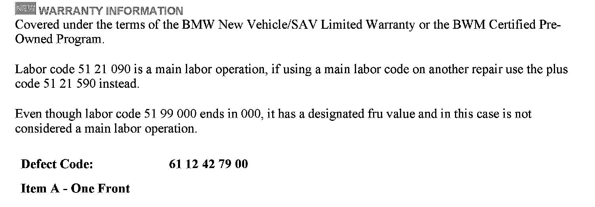
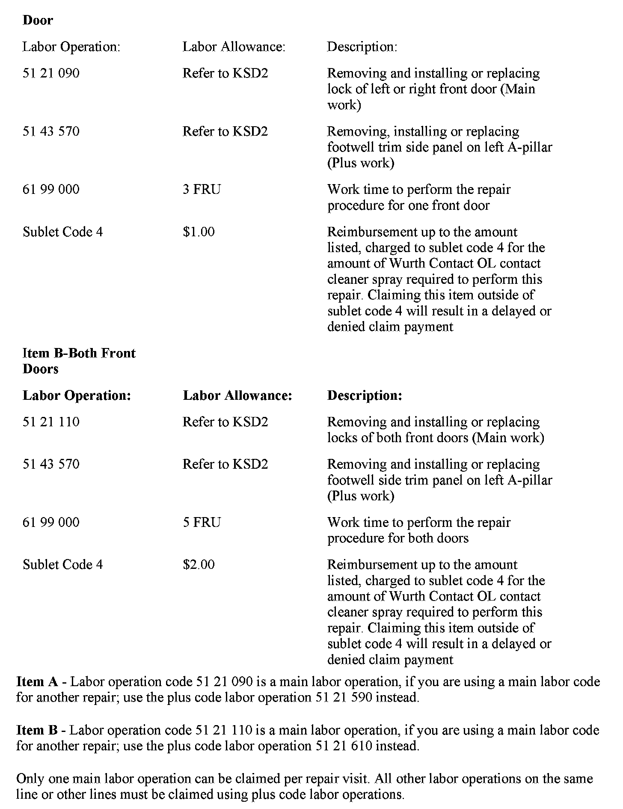
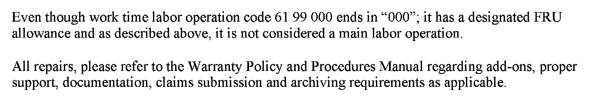
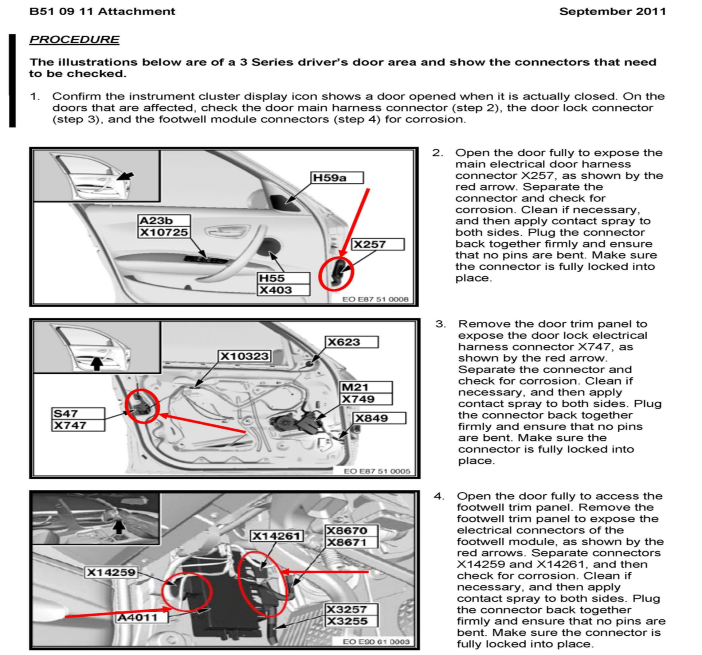

Electrical - 'Door Open' Displayed When Doors Are Closed
SI B51 09 11Body Equipment
September 2011
Technical Service
This Service Information bulletin supersedes SI B51 09 11 dated March 2011.
[NEW] designates changes to this revision
SUBJECT
Door Open Icon Is Displayed when the Doors Are Closed
MODEL
[NEW] E90, E91, E92, E93 (3 Series)
[NEW] E70, E71, E72 (X5)
[NEW] E82, E88 (1 Series)
[NEW] Vehicles produced from August 31, 2009 to February 29, 2012
SITUATION
When the vehicle is in motion, the instrument cluster display shows the door as being open, even though the door is closed.
CAUSE
[NEW] Poor electrical connections at the front door main harness, the footwell module and/or the front door lock connectors.
PROCEDURE
Refer to the attachment.
PARTS INFORMATION



[NEW] WARRANTY INFORMATION
ATTACHMENT

B510911 Procedure